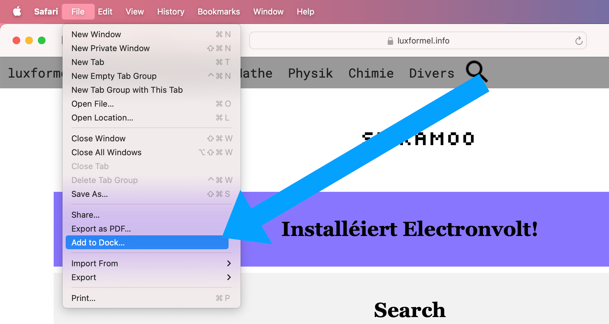
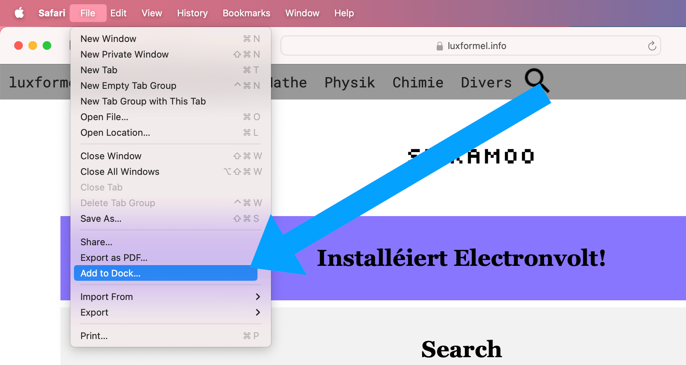
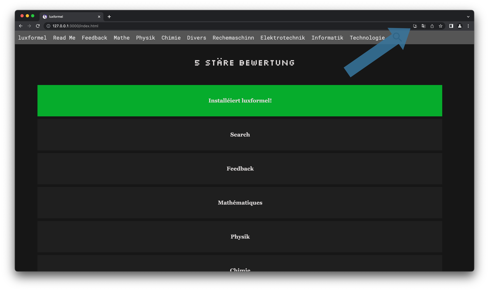
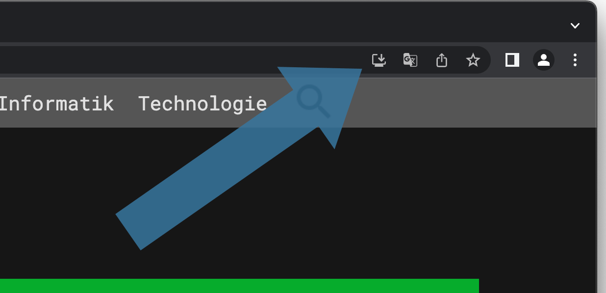
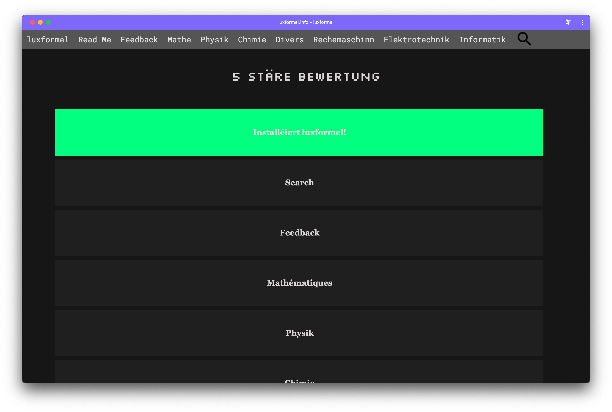
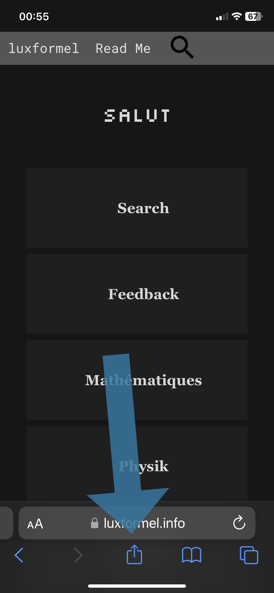

Installéiere vu Luxformel op macOS Sonoma
Säit macOS 14.1 Sonoma, kënnt Dir ee Site am Dock späicheren. Ënnen gesi Dir eng Foto vum Prozess. Dir musst juste op File drécken an dann op Add to Dock....
Wëllkomm op luxformel.info. Dëse Site gouf vu mir Damon Niederkorn an d'Liewe geruff fir Leit déi sech fir STEM interesséieren ze hëllefen. Virun allem d'Onlineléieren soll mat dësem Site verbessert ginn.
Ech wëll preziséieren dass dëse Site een Hobby ass an am Fong mir perséinlech eppes brenge sollt, mä ech hu mech decidéiert wat ech hei maan fir Jiddereen accesibel ze maan.
STEM Fächer kenne schwéier sinn fir ze léieren an se ginn oft nemmen a Schoulen gehaalen. De Firwels sech awer fir déi Themen ze interesséieren sollt keng Limiten hunn an net exklusiv sinn zu enger Zäit an engem sengem Liewen. Jiddereen sollt d'Méiglechkeet hunn sech zu all Zäitpunkt informéieren ze kennen an dat op eng simpel Art a weis.
D'Printfunktion ass ofhängeg vun Ärem Browser den Dir benotzt. Dat
well heeschen dass versidde Browseren eng anner
fit content
Astelung hunn. Fir dei beschte Resultater ass
et recommandéiert déi Astellungen an der Dialog-Box selwer an ze
stellen.
Aus bis elo onerkannte Grenn ass Print
- Funktioun a
FireFox gebugged. De Site gett an engem Chromium baséierte Browser
Programméiert (Brave) et ass recommandéiert dass Dir och ee
Chromium Browser Benotzt also all Browser ausser : FireFox oder
Safari, fir déi beschten Print
Funktioun. Obwuel Safri bis
ewell keng Problemer huet.
Ech bieden Ierch Äre Feedback op déi ënnen verlinkten Email ze
schecken fir dass dëse Site zu eppes gett wat ëmmer an ëmmer méi
relevant fir esou vill wéi méigeleg Leit gett.
Ech wënschen eng 'bonne lecture'.
Email: feedback@luxformel.info
D'Archiv wei den Numm et scho seet soll wichteg Informatiounen déi net onbedingt de Site passen späicheren. PDF - Dokumenter sinn dofir ee gutt Beispill. Tabellen si gutt op enger Säit fir nozekucken mä ee PDF - Dokument mecht dei Saach méi einfach andems et direkt scho preparéiert ass fir benotzt ze ginn.
D'Astellungen späicheren Är Prefernzen an dem Browser, an engem
Deel den localstorage
heescht. Är Astellungen vu luxformel
bleiwen also bei refreshing, oder zou maache vum Browser erhaalen.
Entdeckt also nei Visuell Stiler vu luxformel.
D'Printfunktioun gett leider duerch Är Astellungen vun dem Stil
beaflosst. Et ass récommandéiert dass dir mat dem Hell
Stil
d'Printfunktioun benotzt. D'Formelen ginn nämlech nach mat der
Faarw vum Stil ugewisen.
Säit macOS 14.1 Sonoma, kënnt Dir ee Site am Dock späicheren. Ënnen gesi Dir eng Foto vum Prozess. Dir musst juste op File drécken an dann op Add to Dock....
Luxformel ze installéieren ass ganz einfach! Dréckt einfach uewen op den Download-Knäppchen de bei ierch am Browser misst ugewise ginn. Ënnem am Bild ass gewisen wou sech de Knäppche verstoppt an engem Chrome Browser op engem Mac, mä all OS oder Computer misst mat der Method kompatibel sinn.
 
Wann der op den Download-Knäppchen gedréckt hutt misst eng
Dialog-Box opdauchen, déi Ierch virschléit luxformel ze
installéieren. Dréckt op Install
.
D'luxformel PWA misst elo gedownload sinn. Dir kennt elo luxformel ouni Browser benotzen.
Zënter dem Update 17.4 vun iOS an iPadOS kann een duerch Ännerungen vun Apple net méi PWA verlinkungen op dem Springboard/Homescreen hunn. Dëst ass keng limitéierung vu Luxformel mä eng Äntwert op d'EU-Richtlinn vum "Digital Markets Act (DMA)".
Luxformel ze verlinken ass ganz einfach! Dréckt einfach ënnen op den Share-Knäppchen de bei ierch am Browser misst ugewise ginn. Ënnem am Bild ass gewisen wou sech de Knäppche verstoppt am Safari Browser op engem iPhone, mä all OS oder Handy, Tablett misst mat der Method kompatibel sinn.

Wann der op de Share-Knäppchen gedréckt hutt misst de
Share-Dialog opdauchen. Hei dréckt der
Add to Home Screen
oder änlech genannte Funktiounen.
Dir kennt elo an engem zweete Schrëtt nach auswielen wéi dass
der déi usech Bookmark
nenne wëllt. Dréckt dann wéi hei
Add
.
Luxformel ass elo op Ärem Springboard/Homescreen verlinkt.